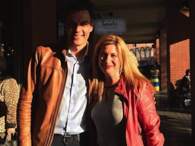
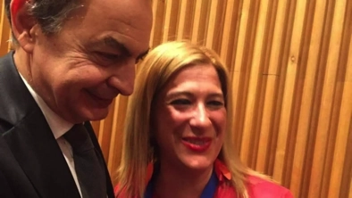

¿Quien tiene que prsentar la Mocion de Censura?.
La persona tiene que ser una persona con futuro Isabel Diaz Ayuso
Su presentacion en el Congreso, es su presentacion como candidata.
los datos del Gobierno desde que llego el virus sanchezz, pudiera se presidente del gobierno. Todos
los años el el virus sanchezzsiempre presenta los datos del PIB.
y ha destacado que España es la economía ¿avanzada? que más crece por segundo año consecutivo, el doble de lo esperado para la zona euro, pero
de que sirve si nunca les pillamos y estamos lejos de equipararnos a Alemania, pongo por caso. Mi PIB es el de la estanteria del super.
Los datos economicos desde 2018, desde que llego al gobierno el virus sanchezz son demoledores.
La vivienda ha subido un 65%, y ademas esta llena de impuestos.
El precio de los alquileres un 45%, y por sus leyes de favorecer a los ocupas, no hay mercado.
La inflacion general un 28%, de que sirven las subidas de pensiones y salarios.
La gasolina un 30%, aparte las subvenciones, que se acaban.
La luz un 35%. ¿Te acuerdas de la excepcion iberica, que subvencionaba la energia, con tus impuestos, claro.
El gas un 50%, el doble para los que seab de letras.
Los vehiculos nuevos un 40%.
La fruta un 35%. Antes del el virus sanchezz, se compraba por kg. ahora por piezas.
La carne un 40%, esto llevi a comprar carne una vez por semana.
El pescado un 40%, el consumo de fresco bajo, aumento el congelado.
Hotels y restaurantes un 35%, disminuyo los dias de estancia.
Medicamnetos un 25% y la sanidad privada.
La deuda publica en 2018 es de 1.209.742 billones la real a fecha de hoy es de
Ver deuda en vivo, no te asustes
La deuda de la Seguridad Social en 2018 de 38.000 mil millones de €, en 2026 es de 136.178 millones de €, asi es
la subida de las pensiones, a deuda.
El informe PISA refleja lo que es la politica de la psoe, Celaá, conocida formalmente como LOMLOE desde 2012, este es refeljo.
El asesinato de Mujeres, por la demoninada violencia de genero, pero en cuestion de muertos y plagas este gobierno rompe
moldes, empecemos por los muertos, en la COVID, (la segunda peor gestion de todos los paises), dijo que uno o dos a lo sumo, 120.000 muertos, la cifra es oficial, se habla de 160.000,
Las Plagas
2019: Aviso de Dana en Valencia(Diciembre).
2020: Pandemia de COVID-19.
2021: Borrasca Filomena,fue una borrasca histórica que provocó nevadas extraordinarias y paralizó gran parte de España entre el 6 y el 11 de enero de 2021.
2022: Grandes incendios forestales.
2023: Incendios e inundaciones.
2024: La gran dana de Valencia.
2025: Apagon electrico en toda España.
2025: Repeticion de grandes incendios forestales.
2026: Descarrilamientos ferroviarios.
Las muertes de mujeres victimas de la llamada ley de genero, aumentan de año en año.
La violencia callejera aumenta en un 72%, 2.600 reyetas al mes.
El PSOE cuenta con ya 126 imputados, 26 de ellos son o han sido cargos públicos, ademas de la esposa del presidente Begoña Gomez, a la espera de juicio con jurado, se
imaginan si le toca ser jurado al Bolaños. Su hermano David Sanchez, ya condenado, el ex fiscal general del Estado, Álvaro García Ortiz, condenado.
Este es el gobierno socialista y progresita, todos los datos han empeorado con su gobierno
"Yo no conducia el tren"
"Todos somos Begoña"
"Somos trasparentes porque pagamos con sobres con ventanilla trasparente".
La Ratita presumida, los mundos de Yoli
Publicado el 21 de julio de 2026
Y va y se lo cree, ya se siente presidenta del la OIT, no se entera, si tuviera alguna posiblilidad el pais de colocar a una presidenta, sanchez habria propuesto a una socialista,
tiene que colocar a unas cuantas y no a ella. No se entera, no la da la neurona, si es que las tiene.
La Chatunga, la llama la fontanera. La chatunga es una cancion de Luis Aguile lanzada en 1967.
Ver video
Los candidatos-as, deben ir acompañadas de un currículum vítae y de un certificado de buena salud firmado por un centro médico reconocido,con todo respeto a mi me parece que la falta un herbor, como se decia en mis tiempos .Se invita además a cada persona candidata a presentar una declaración de no más de
2000 palabras en la que describa su visión de futuro para la Organización y la orientación estratégica que adoptaría en caso de ser nombrada. En su declaración, la persona candidata
también deberá manifestar su compromiso con los valores y el trabajo de la OIT, así como con su estructura tripartita; describir su experiencia en los ámbitos económico, social y laboral, es la dama del paro en Europa, en eso es la numero uno y en asuntos internacionales, así como en cuestiones de liderazgo, le hecharon de Sumar, y gestión organizacional; y
expresar su valoración de las diversidades culturales, sociales y políticas. Además, las personas candidatas deberán indicar su nivel de dominio de las lenguas oficiales de la OIT, habla gallego, pero no vale. quien ostenta la dirección general desde 2022, se presenta a la reeleccion,togoles lo cual resta posibilidades a los demas.
Está la apuesta de Pedro Sánchez para que el ministro de Agricultura, Pesca y Alimentación, Luis Planas, sea el próximo presidente de la FAO, la organización de la ONU para la Agricultura y la Alimentación. Y dos altos cargos de un mismo pais es imposible.
Pseudo español
Publicado el 19 de julio de 2026
Español
Resulta que despues de 73 años de ser español he pasado a ser un pseudo español, es decir que soy un falso español.
Resulta que ahora los españoles verdaderos son los nietos argentinos, los cubanos, uno de Connetica y alguno de Paraguay.
Son los verdadderos votantes y aunque residan en otros paises, votaran por mi pueblo que seguro que inscriben a alguno o de cualquier otro pueblp
,que tendra habitantes virtuales,o hibridos que ahora todos lo nombran, solo cada año de elecciones.
Yo para los socialistas solo soy una unidad recaudatoria, que no tiene derecho a votar, ni a opinar, ni a nada, solo a pagar impuestos .
desde mi primera nomina y jubilado sigo pagando impuestos, y muerto seguire pagando.Esto es progreso socialista.
La Fontanera
Publicado el 19 de julio de 2026



Me llamó la atencion desde el primer dia que la vi en la TV, aun no sabia quie era.
Me quede alucinado, alucinando pepinillos.Lo primero que me llamo la atencion
fue la ropa que llevaba. Una blusa de color blaco, unos pantalones moteados de blancos y rojos
y sobre todo la manera de mirar a la camara con su sonrisa, a mi me parece socarrona.
Tiene una libreta azul en ella figuran los motes que ha puesto, supera, con mucho a Federico Jimenez Lo Santos, vamos que le ha puesto a
la cola.
P.S.- Pedro Sánchez: Con este no se ha atrevido, es el que paga, con nuestro dinero claro.
Koldo García: La Ameba
Ábalos: El Sorbechichis, este es mi preferido
David Sánchez El Empanao,lince cojo
Santos Cerdán: El Pitocorto, que pensara la paqui, mira que hacerla declarar durante los ocho dias de oro
Yolanda Díaz: La Chatunga Genial lo ha cuadrado
Ione Belarra: La Pitones: Sin palabras, me imagino por lo que lo dice
Paco Salazar: El Rancio : Este me acabo de enterar quien es
Gabriel Rufián: El Gorgorito Un acierto
Pablo Iglesias: Susio, Cara Pobre, este fue al Garibaldi a llorar.
María Chivite: María Sarmiento. Maria Sarmiento fue una noble española.
Patxi López: Subnormal, Boniato con Orejas, el Patxi lloro cuando se entero
Me imagino a esta mujer, cual consiglieri, haciendo ofertas que no pudes rechazar, como habra gozado recorriendo toda España, y ofreciendo favores politicos.
Y diciendo trabajo para un solo cliente, y despues yendo a cobrar la sede del psoe, eso si en un sobre con ventanilla trasparente.